چای گلستان
سابقهای به قدمت یک عمر
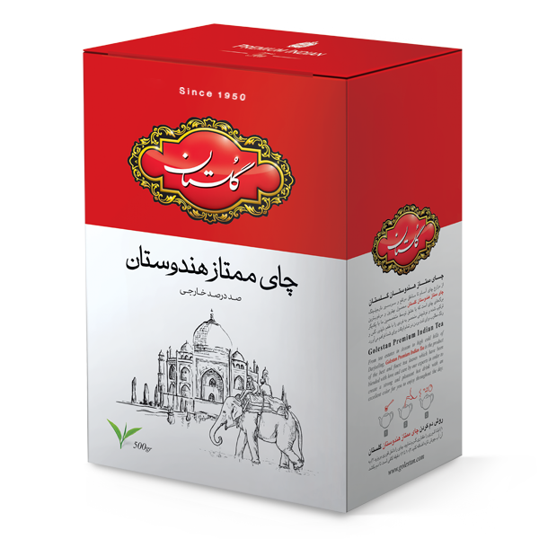
معرفی محصول
چای تنها یك نوشیدنی گرم نیست. یك گفتمان است؛ گرمابخش وجود و بهانهای برای آغاز یك معاشرت دلچسب. بیدلیل نیست كه نام «محبوبترین نوشیدنی دنیا» را با خود یدك میكشد. نوشیدنش خستگیها را فراری داده، حس خوب آرامش به همراه دارد.
برای مردمان ایران زمین نام گلستان با چای پیوند خورده است؛ قدیمیترین محصول مجموعه گلستان، با مدرنترین و بهداشتیترین دستگاههای روز دنیا تهیه و بستهبندی میشود. چیزی كه باعث شده مشتریانش یك عمر به نام گلستان اعتماد كنند، كیفیت، عطر و طعم به یادماندنی آن است.
شرکت گلستان با اتکا به بیش از نیم قرن سابقه در تهیه و ترکیب انواع چای، بهترین انواع چای را از مناطق برتر تولیدکننده مانند هندوستان، سیلان و کنیا خریداری نموده و آن ها را به اقتضای ذائقه ایرانی، به منظور دستیابی به بهترین عطر، طعم و رنگ با استفاده از دستگاه های مخصوص به نسبت مشخصی ترکیب می نماید و در اوزان مختلف بسته بندی و در بازار عرضه می کند
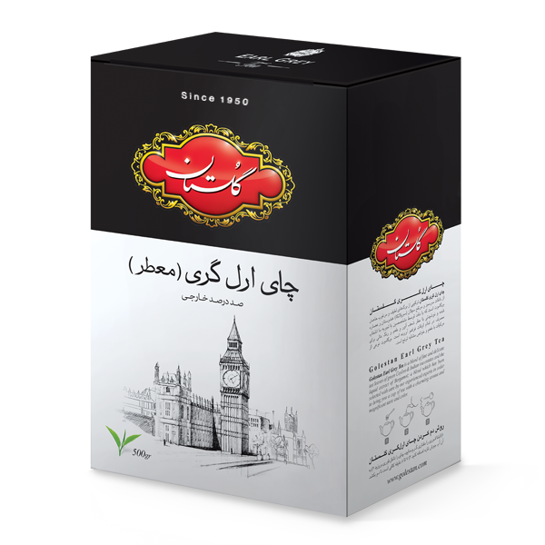
چای ارل گری (معطر)
وزن های موجود
چای ارل گری گلستان، ترکیبی است از انواع چای باروتی سیلان که با عصاره برگاموت معطر شده است. زمان دم کشیدن این چای 7 تا 8 دقیقه می باشد.

چای ممتاز هندوستان
وزن های موجود
چای ممتاز هندوستان گلستان دستچینی است زرین از مرغوبترین برگ و غنچه گیاه چای که در کناره های رودخانه برهماپوترا در اراضی آسام و دارجلینگ هند به عمل آمده است. این چای دارای عطر و طعم طبیعی چای سنتی هندوستان می باشد. زمان دم کشیدن این چای 8 تا 12دقیقه می باشد.

چای سیلان طلایی
وزن های موجود
گلستان با دستچینی از جوانترین برگهای چای رشد یافته در کوهپایه ها و دشت های سریلانکا یکی از بهترین نوشیدنی های چای را با عنوان چای سیلان طلایی به بازار عرضه کرده است. زمان دم کشیدن این چای 7 تا 8 دقیقه می باشد.
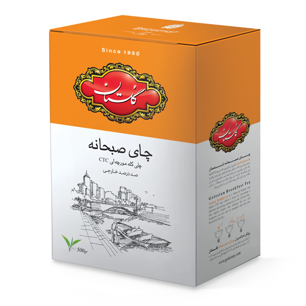
چای صبحانه گلستان
وزن های موجود
چای صبحانه گلستان، دستچینی از بهترین چای کله مورچه ای، باغات هندوستان می باشد. با عطر و رنگ کاملاً طبیعی و به دلیل سرعت زیاد دم کشیدن مناسب جهت استفاده در صبح می باشد. چای صبحانه با رنگ دهی بالا مقرون بصرفه است. زمان دم کشیدن این چای 3 تا 4 دقیقه می باشد.
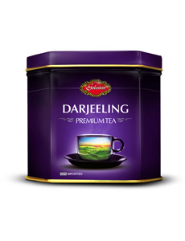
چای دارجلينگ (توقف تولید)
وزن های موجود
چای دارجلينگ دستچينی از بهترين و مرغوب ترين برگ های چای منطقه دارجلينگ در شمال هندوستان و كوهپايه های هيماليا مي باشد. اين چای يكی از ارزشمندترين چای های جهان و دارای عطر و طعمی منحصربه فرد است.
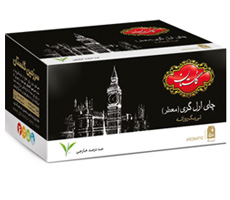
تی بگ ارل گری
تعداد در بسته
چای کیسه ای ممتاز عطری گلستان از ترکیب مرغوبترین چای خارجی CTC هندوستان به همراه عصاره برگاموت به صورت دولایه تولید شده است. عصاره گیاه برگاموت نوشیدنی با عطر شعف آور و طعم و رنگ عالی برای مصرف در تمام اوقات فراهم آورده است. برگاموت نوعی از مرکبات با طعم و خواص مشابه ترنج است.
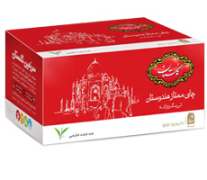
تی بگ ممتاز هندوستان
تعداد در بسته
چای کیسه ای ممتاز هندوستان محصول بهترین و مرغوب ترین برگ های چای می باشد. که با عشق توسط متخصصین شرکت گلستان با یکدیگر ترکیب شده و نوشیدنی منحصر به فردی را با طعم دلپذیر و رنگ مطلوب برای لذت بردن شما فراهم کرده است.
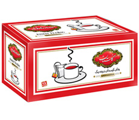
تی بگ خارجه گلستان
تعداد در بسته
چای کیسه ای درجه یک گلستان محصول بهترین و مرغوب ترین برگ های چای از مزارع هندوستان می باشد که توسط متخصصین شرکت گلستان با یکدیگر ترکیب شده، و به صورت تی بگ تک لایه عرضه می شود.
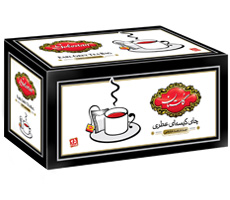
تی بگ خارجه معطر
تعداد در بسته
چای کیسه ای درجه یک گلستان محصول بهترین و مرغوب ترین برگ های چای از مزارع هندوستان می باشد که توسط متخصصین شرکت گلستان با یکدیگر ترکیب شده، و به صورت تی بگ تک لایه عرضه می شود.
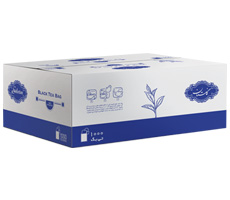
تیبگ خارجه انولوپدار
تعداد در بسته
تیبگ خارجه انولوپدار گلستان در بسته بندی 1000عددی برای مصارف صنعتی، رستوران ها، هتل ها و… عرضه شده است. پاکت محافظ (انولوپ) برای هر کیسه چای باعث ماندگاری بهتر عطر و طعم چای می شود.
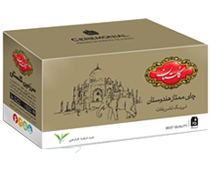
تی بگ تشریفات ممتاز هندوستان
تعداد در بسته
چای کیسه ای تشریفات ممتاز گلستان (انولوپ دار) محصول بهترین و مرغوب ترین برگ های چای از مزارع هندوستان می باشد. که توسط متخصصین شرکت گلستان با یکدیگر ترکیب شده و نوشیدنی منحصر به فردی را برای لذت بردن شما فراهم کرده است.
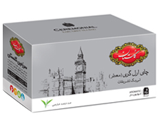
تی بگ تشریفات ارل گری (معطر)
تعداد در بسته
چای کیسه ای تشریفات ارل گری (معطر، انولوپ دار) ترکیبی از برگ های لطیف و مرغوب از بهترین مزارع چای به همراه عصاره برگاموت است. که با دقت توسط متخصصین با تجربه گلستان انتخاب شده و نوشیدنی با عطر شعف آور و طعم و رنگ عالی برای مصرف در تمام اوقات فراهم آورده است. برگاموت نوعی از مرکبات با طعم و خواص مشابه ترنج است.
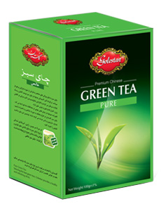
چای سبز خالص گلستان
وزن های موجود
چای سبز گلستان سرشار از ترکیبات آنتی اکسیدان (ترکیبات ضد سرطان) و ویتامینهای K, C, B1, B2, A می باشد و دارای خواص درمانی کاهش ابتلا به سرطان، شادابی پوست و مو، تراکم استخوان، سلامتی دهان و دندان و کاهش وزن است.
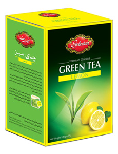
چای سبز لیمویی گلستان
وزن های موجود
چای سبز به دلیل ویژگی های منحصر به فردش از شهرت فراوانی برخوردار است. چای سبز لیمو گلستان لیمو یک نوشیدنی سالم و طبیعی را برای شما به ارمغان می آورد. لذت نوشیدن این چای سالم و طبیعی را تجربه کنید.
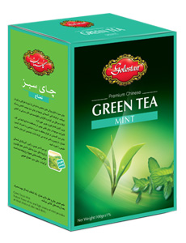
چای سبز نعناع گلستان
وزن های موجود
طعم طبیعی چای سبز و عطر ملایم نعناع، یک انتخاب ایده ال جهت مصرف بعد از وعده های غذایی می باشد. ترکیبات آنتی اکسیدانی موجود در چای سبز با افزایش متابولیسم بدن تاثیر بسزایی در کاهش وزن، کنترل فشار خون و چربی خون دارد.
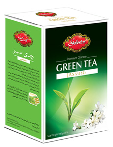
چای سبز یاس گلستان
وزن های موجود
ترکیب گل های یاس و چای سبز رایحه ای خوشایند و به یادماندنی یه ارمغان می آورد. این محصول علاوه بر طعم خوب کلسترول خون را به میزان قابل توجهی کاهش می دهد و به دلیل فلوراید موجود در چای سبز می تواند نقش مهمی در محافظت دندانها ایفا می کند.
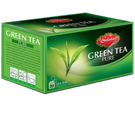
تی بگ چای سبز
تعداد در بسته
چای سبز کیسه ای گلستان به دلیل ویژگی های منحصر به فردش از شهرت فراوانی برخوردار است. ترکیبات آنتی اکسیدانی موجود در چای سبز موجب کاهش ریسک ابتلا به سرطان می گردد و با افزایش متابولیسم بدن تاثیر بسزایی در کاهش وزن، کنترل فشار خون و چربی خون دارد.
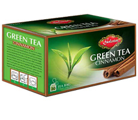
تی بگ چای سبز دارچین
تعداد در بسته
با نوشیدن یک فنجان چای سبز کیسه ای دارچین گلستان، علاوه بر خواص مفید چای سبز از املاح معدنی موجود در دارچین از جمله کلسیم، آهن، پتاسیم و … بهره خواهید برد. این نوشیدنی برای بیماران دیابتی نیز مفید می باشد.
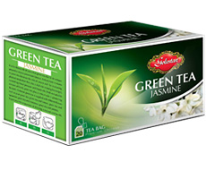
تی بگ چای سبز یاس
تعداد در بسته
ترکیب گل های یاس و چای سبز رایحه ای خوشایند و به یادماندنی یه ارمغان می آورد. چای سبز کیسه ای یاس گلستان علاوه بر طعم خوب کلسترول خون را به میزان قابل توجهی کاهش می دهد و به دلیل فلوراید موجود در چای سبز می تواند نقش مهمی در محافظت دندانها ایفا می کند.
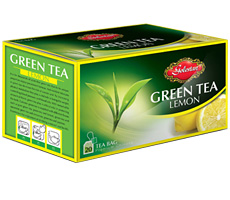
تی بگ چای سبز لیمویی
تعداد در بسته
چای سبز کیسه ای لیمو گلستان به دلیل خواص درمانی متفاوت اش در کاهش ابتلا به سرطان، شادابی پوست و مو، تراکم استخوان و سلامتی دهان و دندان یک نوشیدنی سالم و طبیعی را برای شما به ارمغان می آورد. لذت نوشیدن این چای سالم و طبیعی را تجربه کنید.
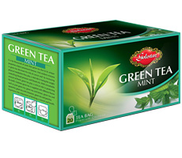
تی بگ چای سبز نعناع
تعداد در بسته
طعم طبیعی چای سبز و عطر ملایم نعناع، یک انتخاب ایده ال جهت مصرف بعد از وعده های غذایی می باشد. ترکیبات آنتی اکسیدانی موجود در چای سبز کیسه ای نعناع گلستان با افزایش متابولیسم بدن تاثیر بسزایی در کاهش وزن، کنترل فشار خون و چربی خون دارد.
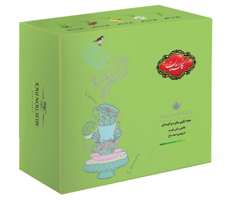
جعبه ترکیبی چای سبز گلستان
تعداد در بسته
بسته ترکیبی 60عددی چای سبز گلستان مناسب انواع سلیقهها و حاوی 60 عدد چای کیسهای با طعمهای چای سبز دارچین (20 عدد)، چای سبز خالص (20 عدد)، چای سبز لیمویی (10عدد) و چای سبز نعناع (10عدد) است.
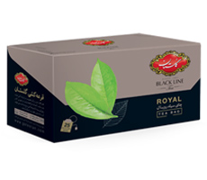
چای رویال بلک لاین
تعداد در بسته
چای تی بگ رویال بلک لاین نوشیدنی دلچسب و محبوبی برای تمام اوقات روز است. چای کیسه ای رویال از مرغوب ترین چای CTC صددرصد خارجه هندوستان و کنیا تهیه شده است و در بسته بندی ویژه عرضه می شود. برای ماندگاری بهتر عطر و طعم چای، تی بگ بلک لاین داری پاکت محافظ (انولوپ) برای هر کسه چای می باشد.
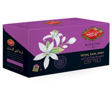
چای بلک لاین رویال ارل گری
تعداد در بسته
تی بگ بلک لاین رویال ارل گری با طعم برگاموت ساخته شده از مرغوب ترین چای CTC هندوستان و کنیا تهیه شده است و در بسته بندی ویژه عرضه می شود. چای کیسهای رویال ارل گری گلستان علاوه بر مطلوبیت طعم و رفع خوابآلودگی و سردرد مفید است. برای ماندگاری بهتر عطر و طعم چای، تی بگ بلک لاین داری پاکت محافظ (انولوپ) برای هر کیسه چای می باشد.
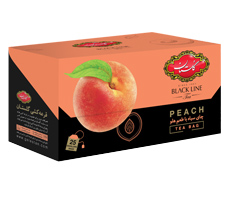
چای بلک لاین با طعم هلو
تعداد در بسته
تی بگ بلک لاین گلستان با طعم هلو از ترکیب 100% چای سیاه سی تی سی هندوستان و کنیا با طعم هلو ساخته شده و نوشیدنی خوشعطرو دلچسب برای تمام اوقات روز است. برای ماندگاری بهتر عطر و طعم چای، تی بگ بلک لاین داری پاکت محافظ (انولوپ) برای هر کیسه چای می باشد. این چای کیسهای دلپذیر را 3 تا 5 دقیقه در آبجوش قرار دهید تا دم بکشد.
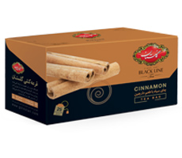
چای بلک لاین دارچین
تعداد در بسته
تی بگ بلک لاین دارچین گلستان در بسته بندی ویژه به بازار عرضه شده است. دارچین اثر آرام کننده و شاد کننده دارد و باعث بهبود گردش خون می شود. دارچین علاوه بر همه این خواص، طعم بسیار خوبی نیز دارد. برای ماندگاری بهتر عطر و طعم چای، تی بگ بلک لاین دارچین گلستان داری پاکت محافظ (انولوپ) برای هر کیسه چای می باشد.
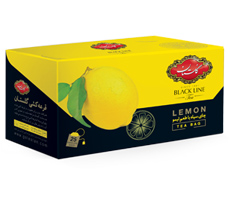
چای بلک لاین لیمویی
تعداد در بسته
تی بگ بلک لاین لیمویی محصولی خوش عطر و فرح بخش است که از مرغوب ترین چای CTC صددرصد خارجه هندوستان و کنیا تهیه شده است و در بسته بندی ویژه عرضه می شود. برای ماندگاری بهتر عطر و طعم چای،تی بگ بلک لاین داری پاکت محافظ (انولوپ) برای هر کیسه چای می باشد.
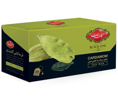
چای بلک لاین زعفرانی
تعداد در بسته
تی بگ بلک لاین گلستان با طعم دهنده ی طبیعی هل از مرغوب ترین چای CTC صددرصد خارجه هندوستان و کنیا تهیه شده است و در بسته بندی ویژه عرضه می شود. برای ماندگاری بهتر عطر و طعم چای، تی بگ بلک لاین داری پاکت محافظ (انولوپ) برای هر کیسه چای می باشد.
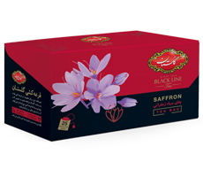
چای بلک لاین با عطر هل
تعداد در بسته
تی بگ بلک لاین زعفرانی گلستان در بستهبندی ویژه به بازار عرضه شده و حاوی مرغوبترین انواع زعفران است. زعفران شادیآور بوده و تأثیر بهسزایی در تقویت سیستم عصبی دارد. برای ماندگاری بهتر عطر و طعم چای، تی بگ بلک لاین زعفرانی گلستان داری پاکت محافظ (انولوپ) برای هر کیسه چای می باشد.
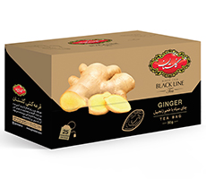
چای بلک لاین زنجبیل
تعداد در بسته
تی بگ بلک لاین زنجبیل محصولی خوش عطر و طعم است که از مرغوب ترین چای CTC صددرصد خارجه هندوستان و کنیا و زنجبیل تهیه شده است. زنجبیل گیاهی سرشار از آنتی اکسیدان و دارای خواص ضد التهابی، بهبود دهنده سیستم ایمنی، تسکین دهنده دستگاه گوارش است و فواید فراوانی برای سلامتی دارد.
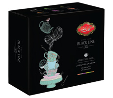
جعبه ترکیبی تی بگ بلک لاین
تعداد در بسته
چای کیسهای ترکیبی گلستان مدل Black Line بسته60 عددی در شش طعم متفاوت ارل گری، لیمو، رویال، دارچین، هل و هلو تهیه شده است.